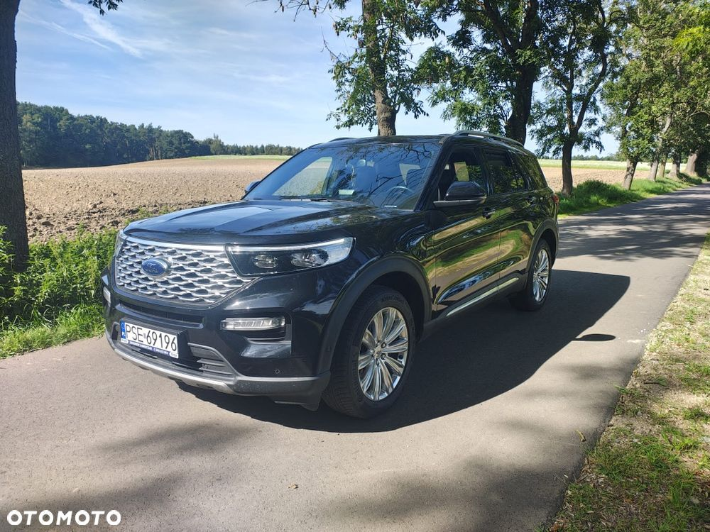
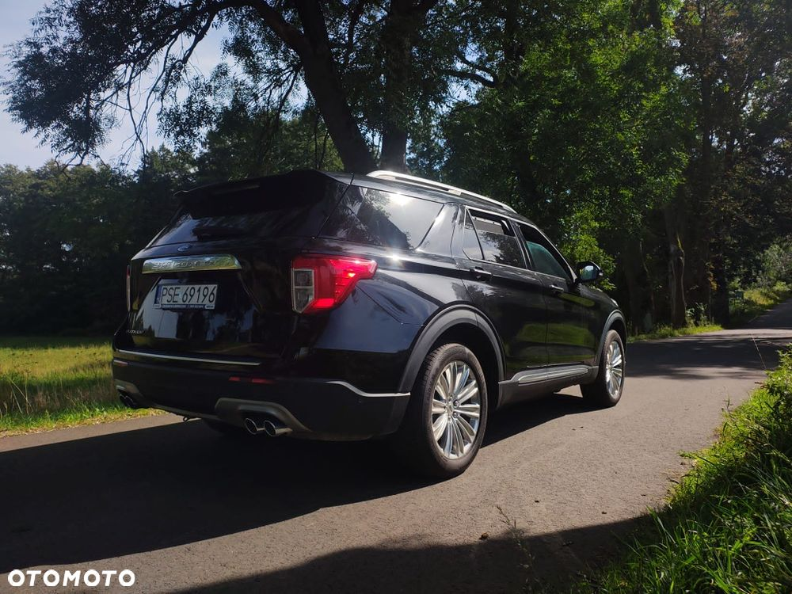
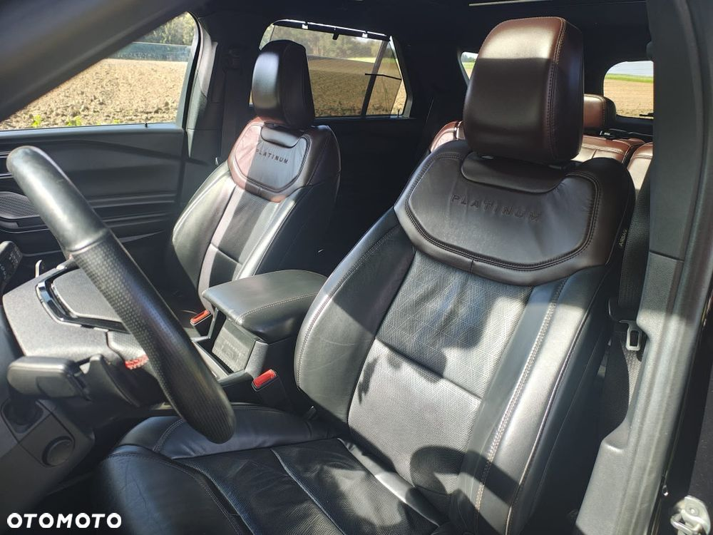
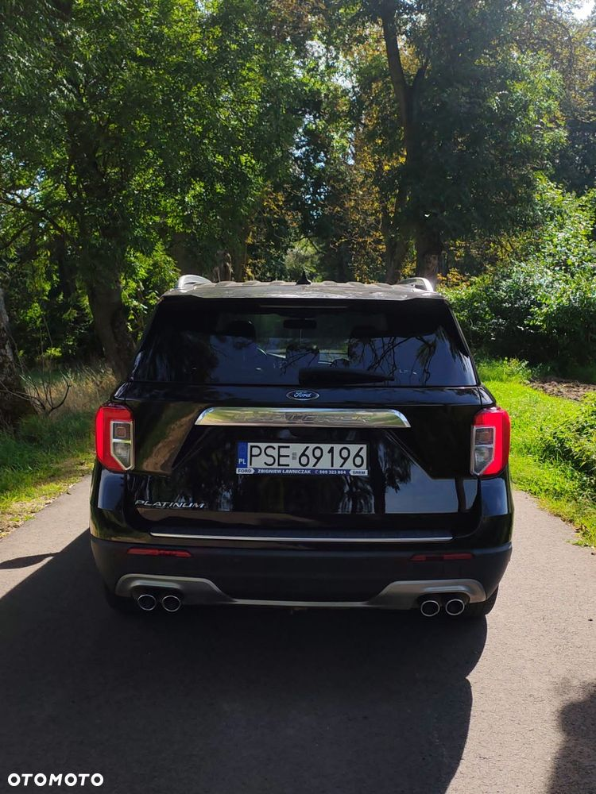
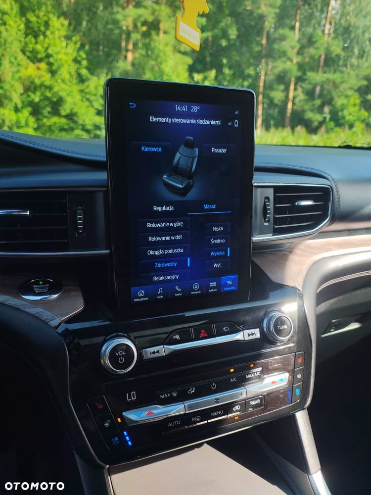
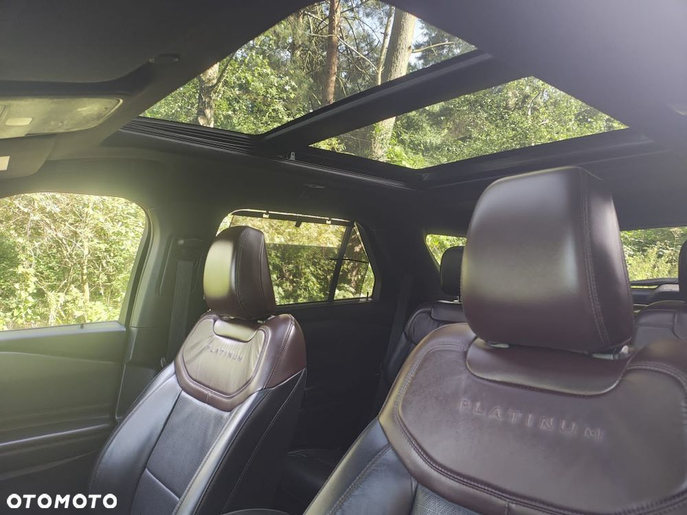
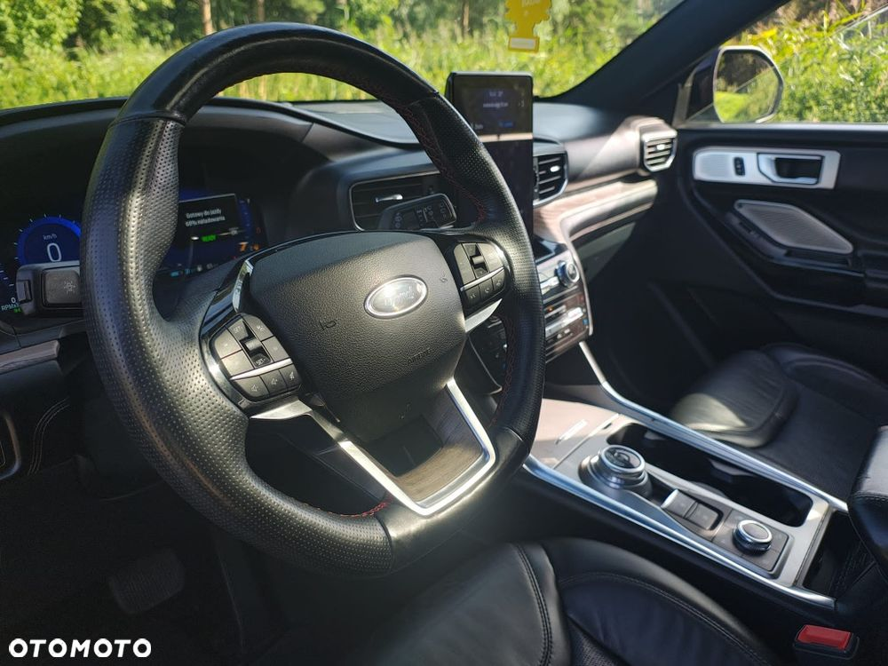
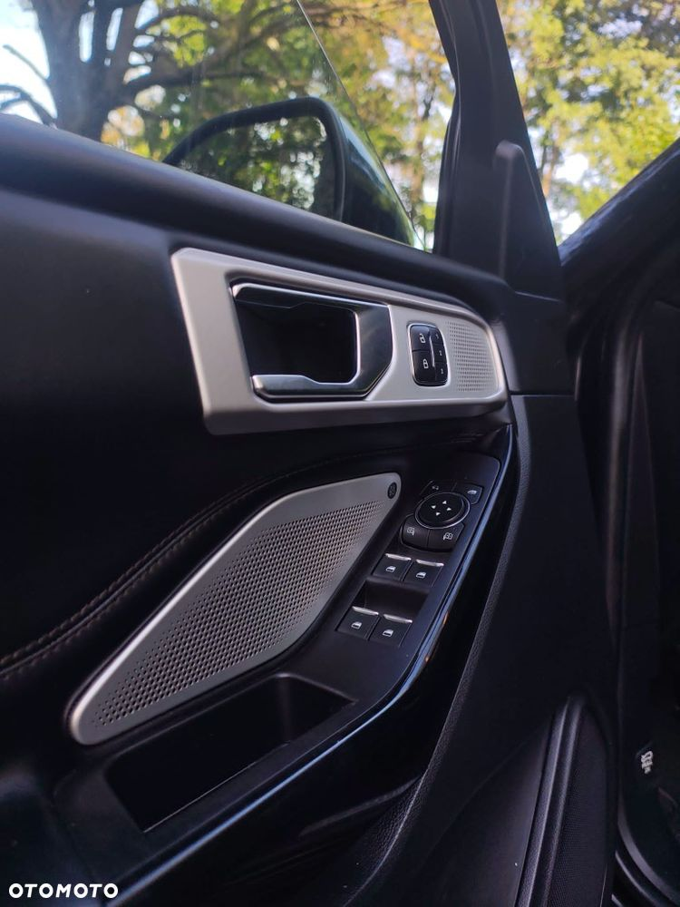

Sprzedam Ford Explorer 3.0 benzyna Plug-in z 2021 roku w bardzo bogatej wersji wyposażenia Platinum. połączenie komfortu przestrzeni i niezawodności. Wyposażenie - W listopadzie wymienione oleje i filtry w silniku i skrzyni biegów i oleje w skrzyni rozdzielczej, redaktorze i dyferencjale. Nawigacja aktualizowana w listopadzie . Explorer Hybrid plug in 3.0V6 moc ogólna 457KM i 825Nm, od 0-100 6s : Bateria jest w bardzo dobrej kondycji Zasięg w trybie elektrycznym około 30-45km zależny od stylu jazdy pogody i od trasy czy jazdy miejskiej. Komfort i styl wnętrza 7 miejsc siedzących: Fotele w układzie 2+3+2, z elektrycznie składanym trzecim rzędem. System multimedialny: Ekran dotykowy o przekątnej 10,1 cala z systemem SYNC 3 i nawigacją. Nagłośnienie Premium: System audio B&O z 14 głośnikami o mocy 980 W.Klimatyzacja: Trzystrefowa, sterowana elektronicznie.Fotele i kierownica: Podgrzewane fotele przednie i tylne, podgrzewana kierownica oraz fotele przednie z funkcją wentylacji i masażu. Fotel kierowcy i kierownica elektrycznie regulowane z pamięcią. Dach: Panoramiczny, otwierany elektrycznie szklany dach. Oświetlenie: Nastrojowe oświetlenie wnętrza (ambientowe) z możliwością wyboru koloru. Bezpieczeństwo i technologie (Ford Co-Pilot360)Tempomat: Adaptacyjny z funkcją Stop & Go i systemem rozpoznawania znaków drogowych.Asystenci jazdy: System utrzymania na pasie ruchu (Lane Keeping Aid), asystent martwego pola (BLIS) oraz asystent hamowania podczas cofania. Hak holowniczy. Kamera: Kamery 360 stopni z przodu i z tyłu oraz system wspomagający parkowanie (Active Park Assist 2.0). Wygląd zewnętrzny i mechanika Napęd: Inteligentny napęd na cztery koła (AWD) ze specjalnym systemem Terrain Management (wybór 7 trybów jazdy). Skrzynia biegów: 10-biegowa, automatyczna przekładnia. Reflektory: Adaptacyjne reflektory LED.Klapa bagażnika: Otwierana i zamykana elektrycznie, również bez użycia rąk. Platinum: Stawia na elegancję z satynowymi wykończeniami grilla, relingami i detalami nadwozia. We wnętrzu zastosowano wykończenia imitujące drewno oraz najwyższej jakości perforowaną skórę. Posiada dedykowany wzór 20-calowych felg.







